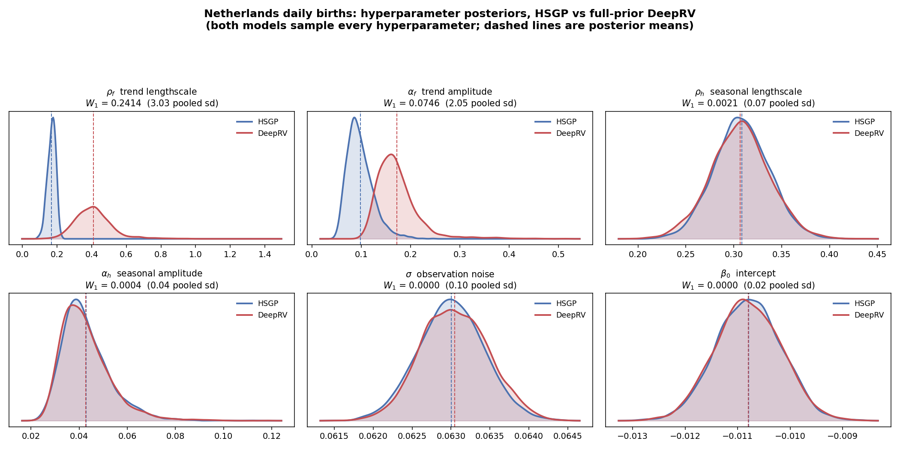
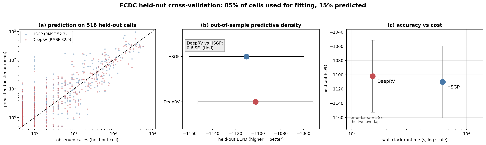
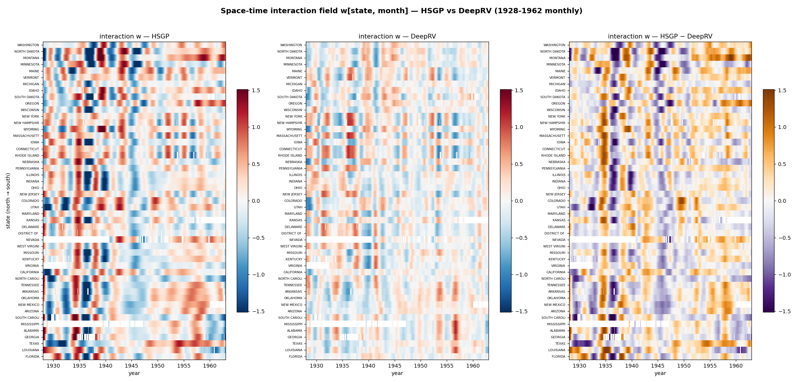

Gaussian process priors are standard in hierarchical models of spatio-temporal data, but exact inference costs O(N³). This thesis compares two approximations that replace the representation of the latent function while leaving the sampler and the inferential target unchanged — and asks what survives the substitution.
Everything but the latent representation is matched: kernel, seasonal component, containment priors, likelihood, data window and NUTS settings. Enforcing that took an audit, which caught a covariance-kernel mismatch and a seasonal-parameterisation mismatch.
The comparison separates two properties that are usually reported together.
| Property | Preserved? | Evidence |
|---|---|---|
| Latent fields and their predictive consequences | yes | posterior mean trends correlate at 0.9998 and 0.9999 on the two birth series; held-out predictive density on ECDC tied at 0.6 SE |
| Hyperparameter posteriors | no | Dutch trend lengthscale displaced by 3.0 pooled posterior SD, while every parameter bypassing the decoder agrees to four decimal places |
| Uncertainty width | no | DeepRV's 95% bands cover the synthetic truth 85.7% of the time against HSGP's 94.6% |

Both measles panels carry a space–time interaction, and it is the only component on which the methods disagree. Strip it out and the fitted surfaces agree to within a correlation of 0.996 — and every fit gets substantially worse.
| ECDC (29 × 120) | Monthly Tycho (49 × 420) | |
|---|---|---|
| Interaction lengthscale | near the basis resolution floor | well inside representable range |
| HSGP sampling | 34 divergences, funnels | clean, 0 divergences |
| Predictive density | tied (0.6 SE on held-out cells) | HSGP better in sample by 33 SE of WAIC |
| Cost | DeepRV ≈ 4× faster | DeepRV ≈ 2.7× faster |


git clone https://github.com/USERNAME/deeprv-vs-hsgp.git
cd deeprv-vs-hsgp
python -m venv .venv && source .venv/bin/activate
pip install -r requirements.txtEach experiment folder runs independently: prepare the panel, train the decoders (offline, under a minute on CPU), fit under NUTS, regenerate the figures. Posterior archives and decoder weights are not tracked in git — they are regenerated by the scripts. See the README for the map from each thesis result to the script that produced it.
Use DeepRV when compute is the binding constraint, when the interaction is fine-grained enough to strain an HSGP basis, and when the latent field or its predictive consequences is the estimand. Use HSGP when the interaction lies within the representable range, when in-sample fit is the priority, or when the kernel hyperparameters are themselves of scientific interest. More generally, a surrogate prior should be assessed on whether it preserves the inference rather than on whether it reproduces the fitted curves — because it can do the second while failing the first.